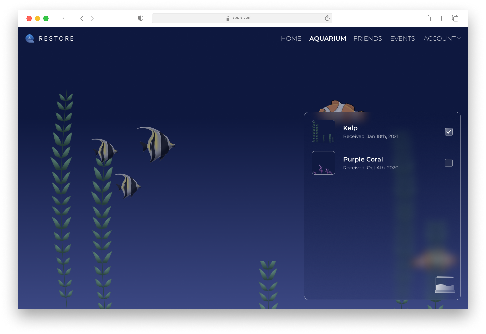

Restore
Save our oceans.
RESTORE is a gamified website aimed to raise public awareness of beach cleanups in order to combat the growing threat of pollution. Through our website, users will have the opportunity to grow a community and obtain achievements for finding and attending local beach cleanups.

Login Page
Users can either login to an existing account or create a new account through our Sign Up link
Dashboard
Users have access to all of our main features through our Dashboard. Here users can view all of the event
they are currently registered for, as well as view the live aquarium in the background full of fish they’ve
earned from past events


Aquarium
Users have a full view of their aquarium as well as the ability to customize the tank decorations
Friends
User can easily search for and add friends, as well as look at their current friend requests.


Events
Users can search for and add upcoming events. They can user the filters to help them narrow down what event
best fit their interests. Users can also submit a form to create and event on their own, which will then be
reviewed by a staff memeber.